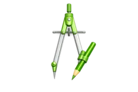
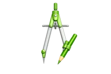
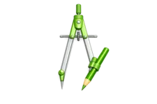
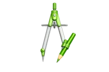

 


AI-era brand governance — how brand standards evolve when anyone can generate
Brand & StrategyPersonal RAG: Making sense of local data that lives on your machine but never gets used
SystemsIterative software development without code — what developer experience looks like for non-developers
ProcessThis site (the lab itself)
Build LogWeave: A proof of concept exploring the genealogy of ideas and strategy
ToolsNothing here yet
Shipping the Lab: A Build Log
Build LogWhat If You Could Build Your Own Thinking Tools?
AI / ToolsMedium Feel is run by Tyler Kemp, a project manager and strategist based in Portland, Maine.
Background in brand strategy and marketing operations. Experienced managing integrated campaigns across branding, web, digital, print, and launches.
Currently exploring how AI is changing brand work, and building this lab to think through it publicly.
Whether you're hiring, have a project in mind, or just want to talk about where brand and marketing are headed.